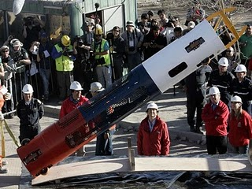

Pero con todo, fallamos
Entre tanto festejo por el rescate de los 33 mineros de Atacama, se me viene a la mente una imagen histórica. Cuando un general romano vencedor ingresaba a Roma, triunfante dirigiendo el desfile de la victoria, en su carro le acompañaba un esclavo leal, que sostenía frente a su cabeza una corona de laureles, y le recitaba al oido continuamente: “Mira tras de tí. Recuerda que sólo eres un mortal” (Respice pos te! Hominem te memento!) [1]
Y es bueno recordar nuestras limitaciones, sobretodo ahora que se llena de elogios a nuestra ingeniería, que se lo merece, por cierto, pero hay una lección tecnológica de este rescate que no debemos dejar pasar, y la explica Juan Carlos Barroux en su excelente blog Tecnología e Innovación.

Luego de analizar la tecnología de la famosa cápsula Fenix, Juan Carlos lanza la siguiente reflexión:
La cápsula Fénix es un avance incremental sin duda alguna, ante la necesidad de modificar el diseño anterior frente a requerimientos un orden de magnitud más difíciles. La ingeniería chilena demostró su gran fortaleza en el área del gestión de procesos siguiendo un protocolo de pruebas meticuloso. El país se mostró como lo que es; un país ordenado en donde los procedimientos funcionan. Todo un éxito ante los ojos del mundo. Bien para los mineros y bien para Chile.
Sin embargo, para mi fallamos.
Me tildarán de aguafiestas, quizás con cierta razón, pero es cuando todo va perfecto que se siembran las semillas de la derrota. Argumentaré mi percepción. ¿Quién es el dueño del diseño? ¿Quién tiene la PI (i.e. Propiedad Intelectual) de la cápsula Fénix? ¿Quién inició el proceso para tener la patente de invención? Busqué en la base de datos de patentes, y simplemente nadie todavía ha iniciado ese proceso. Sin leer los acuerdos y contratos entre el Gobierno de Chile, vía Codelco, ASMAR o quien sea, y la NASA no es posible saber si quedó especificado en algún acápite. Sospecho que el objetivo siendo el de rescatar a los mineros con vida, cualquier objetivo subsidiario de desarrollar el cluster minero quedó, una vez más, en el último de los cajones.
Por el otro lado, ¿qué universidad chilena participó del proceso de diseño?
Hasta donde yo sé, ninguna. Ninguna. Me cuesta mucho trabajo el creer que los departamentos de ingeniería mecánica de la Universidad de Chile, de la UTFSM, de la PUC, la Universidad de Concepción, sólo para nombrar algunas, no sean capaces de tomar los requerimientos y basándose en las soluciones similares, como las descritas en la patente 4,254,994, no puedan diseñar, construir, probar, validar, patentar y generar valor mediante una solución similar a las cápsulas Fénix, para cuyo diseño tuvimos que llamar nada menos que a la NASA.
¿Por qué? ¿Qué pasó? ¿Acaso nuestros políticos y dirigentes no confían en los diseños nacionales? Si ese es el caso, entonces el fantasma del Transantiago aún ronda y estamos condenados al subdesarrollo perenne. ¿Acaso somos excelente ingenieros de procesos productivos, pero a la hora de diseñar algo nuevo, no sabemos por dónde empezar? Es posible, y será por eso entonces que se necesitó de un ingeniero de sistemas extranjero para enfrentar un problema nuevo y no estructurado claramente. Hablo de sistemas en general, de esos sistemas de la Teoría General de Sistemas (TGS) y no sólo de los compuestos por bitios.
En Chile la especialidad de ingeniería de sistemas no se dicta en las universidades locales, cuando justamente esa es la especialidad requerida para enfrentar problemas nuevos y, sobretodo, no estructurados, o sea, incompletamente especificados. “Aprovechemos este accidente para dar un salto adelante” dijo el Presidente Sebastían Piñera hoy. Aprovechemos entonces.
(las negritas las puse yo).
Me dejó pensando Juan Carlos, porque tiene razón. ¿Por qué tenemos siempre que recurrir a la ayuda de tecnología extranjera para solucionar nuestros problemas? Es cierto, parece que somos buenos para seguir procedimientos, usar tecnología, y resolver y enfrentar problemas cuando se presentan.
Nosotros provocamos el drama de la Mina San José, y nosotros fuimos capaces de solucionarlo. Somos reactivos, no proactivos.
Quizás por eso es que somos tan “despelotados”, y poco planificados, porque tenemos confianza en que si hay algún problema somos capaces de resolverlo. “Echémosle pa´delante, que en el camino arreglamos los cagazos que queden”.